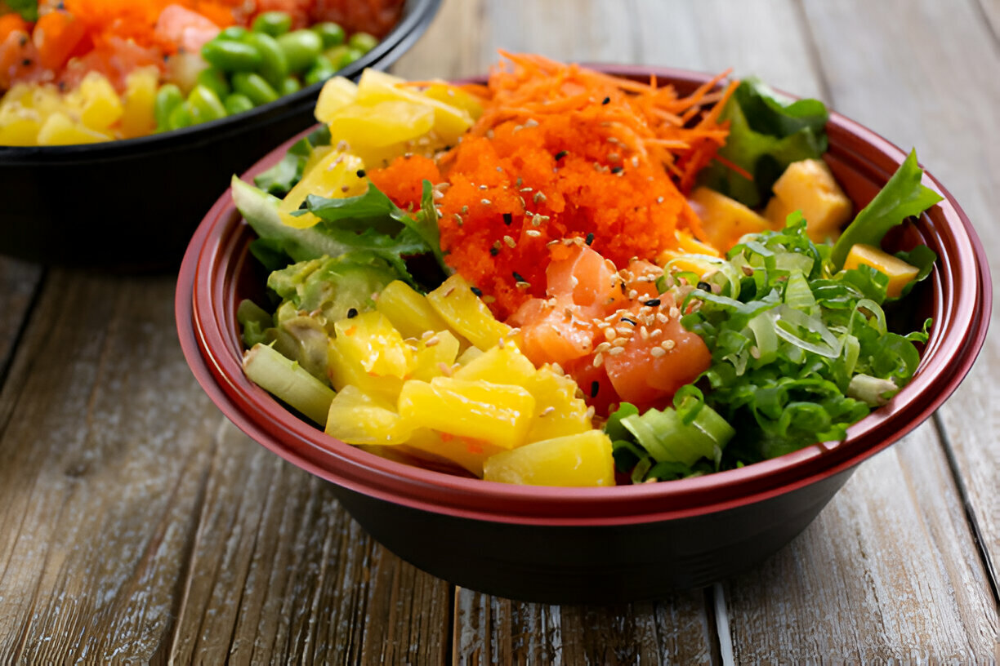

Poke Bowl Tropical
Ingredientes: arroz, frutas a elección, pollito hervido, palta, verduras, quinoa remojada.
Tiempo: 20-30 min.
Preparación: Cocina el arroz y la quinoa. Corta las frutas y verduras. Sirve todo en un bowl y acompaña con el pollo.